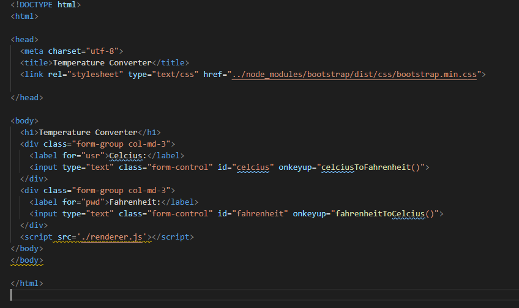
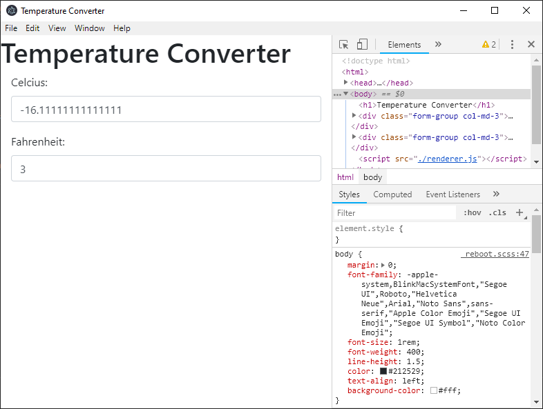

Desktop application development using HTML, CSS, JS
2 types of process
package.json
"name": "my-new-app",
"productName": "my-new-app",
"version": "1.0.0",
"description": "My Electron application description",
"main": "src/index.js",
"scripts": {
"start": "electron-forge start",
"package": "electron-forge package",
"make": "electron-forge make",
"publish": "electron-forge publish",
"lint": "eslint src --color"
},
index.js
import { app, BrowserWindow } from 'electron';
let mainWindow;
const createWindow = () => {
mainWindow = new BrowserWindow({
width: 800,
height: 600,
});
mainWindow.loadURL(`file://${__dirname}/index.html`);
mainWindow.webContents.openDevTools();
mainWindow.on('closed', () => { mainWindow = null });
};
app.on('ready', createWindow);
index.html
renderer.js
function celciusToFahrenheit() {
let celcius = document.getElementById("celcius").value;
let fahrenheit = (celcius * 9) / 5 + 32;
document.getElementById("fahrenheit").value = fahrenheit;
}
function fahrenheitToCelcius() {
let fahrenheit = document.getElementById("fahrenheit").value;
let celcius = ((fahrenheit - 32) * 5) / 9;
document.getElementById("celcius").value = celcius;
}
result
npm run package
npm run make
Choose the right tools for your goals